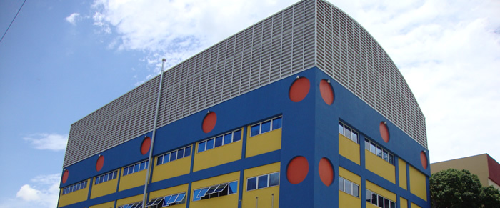
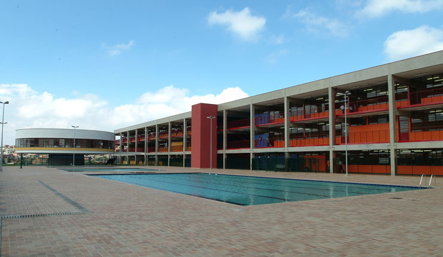
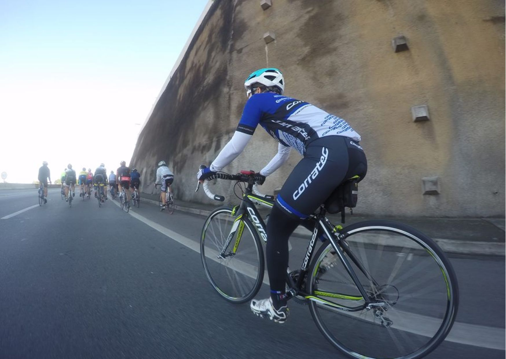
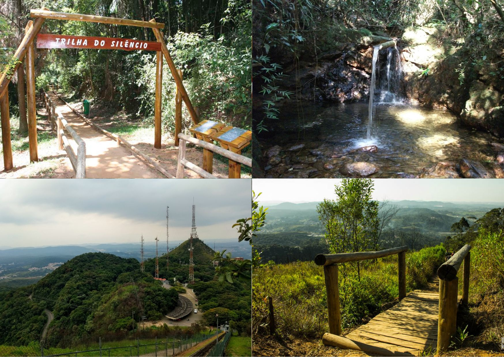
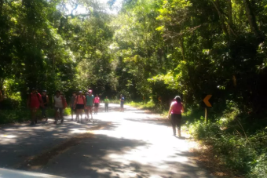

Informações Demograficas
Área 27,6 km²
População (13°) 281.824 hab. (2015)
Densidade 80,95 hab/ha
Renda média R$ 877,50
IDH 0,791 - médio (77°)
Subprefeitura Pirituba/Jaraguá
Comércio
O bairro é repleto de restaurantes, para sair com sua família. Também tem muitos mercados na região para suprir as necessidades da população da região.
Educação no bairro
Colégio Vaccaro
O Colégio Vaccaro é uma das melhores escolas de São Paulo para o seu filho ter a melhor educação. Os alunos do Colégio Particular Jaraguá Vaccaro tem uma educação de qualidade para formar cidadãos competentes, conscientes e responsáveis.
Site oficial: https://colegiovaccaro.com.br/
Colégio Brida
O Colégio Brida assumi o compromisso de educar os nossos alunos dentro de um ambiente afetivo e baseado nos princípios humanistas.
Site oficial: https://www.colegiobrida.com.br/home/
CEU Vila Atlântica
O Colégio CEU Vila Atlântica oferece uma grande estrutura para o desenvolvimento dos alunos, com espaços de lazer e bom ensino para qualquer ano.
Site oficial: http://portal.sme.prefeitura.sp.gov.br/
Lazer
|  |  |  |
Ciclismo |
Aventura |
Esportes |
| Homens e mulheres de diferentes regiões e cidades vêm à Estrada Turística do Jaraguá, da rodovia Anhanguera ao calçadão entre os picos Jaraguá e Papagaio, para praticar passeios de bicicleta e apreciar a vista panorâmica de São Paulo e arredores a partir de uma altitude de até 1.135 metros Cidade. Os passeios de bicicleta também acontecem do outro lado da área, mas em menor escala, na estrada de terra do Morro de Taipas (+/-1.211 m) na Serra da Cantareira Núcleo Taipas. | Algumas pessoas vêm à região para "aventurar-se" nas trilhas do Parque Estadual do Jaraguá (PEJ). Existem vários ao redor do Morro Jaraguá, mas apenas a Trilha do Pai Zé, Trilha da Bica e Trilha do Silêncio estão oficialmente abertas ao público. | É comum a realização de treinos para corridas de rua, corridas de montanha e competições de ciclismo. Esses treinos ocorrem principalmente no trecho interno ao PEJ da Estrada Turística do Jaraguá. Enfim, na confluência da rodovia dos Bandeirantes com o Rodoanel há ainda uma escola de aeromodelismo, a Aerosampa, e outra de tiro, o Clube Paulistano de Tiro. |